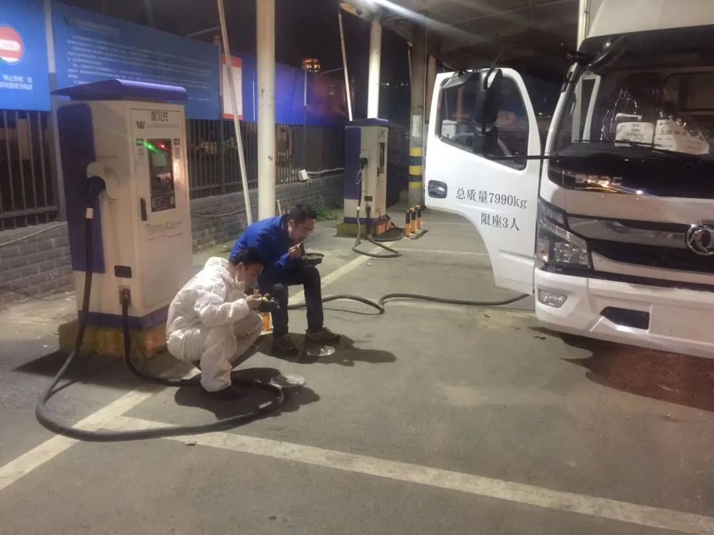
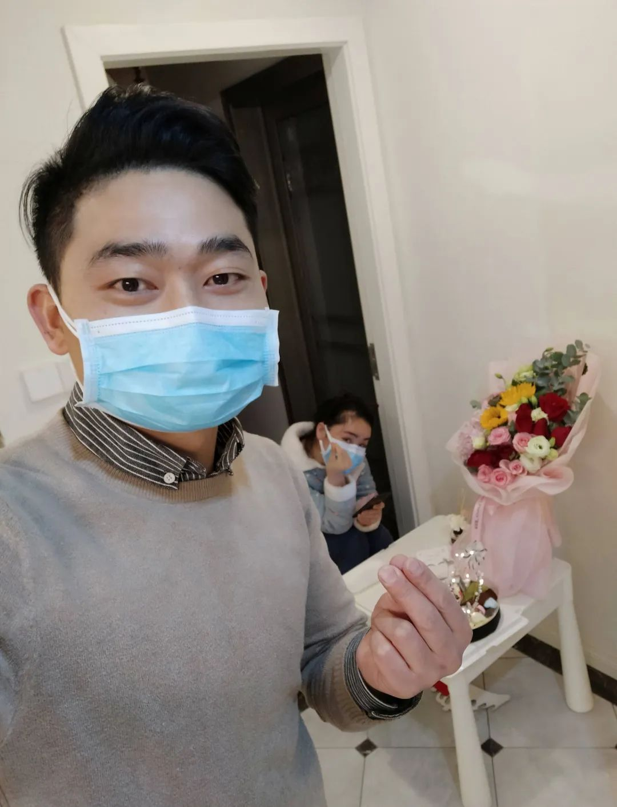

回武汉第二天封城、发烧，一个青年导演的自救口述
原文链接 备份链接 *************▲*************1月29日，钱珵戴着用文件袋改装的面罩，在医院抽完血后自拍。 （受访者供图/图） 全文共4492字，阅读大约需要10分钟。 这次疫情有影响到我最近写剧本的内容， …
*新京报记者 王昱倩 王瑞文 王洪春 王飞翔 实习生 王亚会 王泽勋 郭懿萌 编辑 李明 校对 翟永军*
导演程逸飞把纪录片的第一个画面留给了那条江。
一群赤条汉子吼几嗓子，挨个扎进江面。江边上，飘来熟悉的凤凰传奇的广场曲。穿着红色上衣的中年妇女，揣着音箱一个人跳舞。
很长一段时间里，这个40岁的武汉男人反复被这个场景击中。
他的镜头记录了武汉封城之后的日子。空无一人的街道，对着他大哭的护士，大雪中搬物资的志愿者。
更多的是在武汉守望着的人们。有人在妻子感染后，用心筹备了一次结婚纪念日；有人在情人节给医生送了半车鲜花；有人骑了十几公里，只为给别人找一只猫……

▲“封城”第七日，1月29日晚，武汉街头许多标志性建筑打出“武汉加油”的灯光字样。拍者 许星星 摄
━━━━━
逃离与留守
夕阳从武汉金银潭医院背后穿过，落在白色的病房大楼上。
段光训夫妻俩在这栋楼里做了7年保洁，武汉封城后，原本60多人的保洁队伍只剩下23人。
他们没走，甚至还把两个儿子叫过来帮忙。一家四口承包了医院南楼1到4楼的保洁工作。和护士们一样，他们每天待在隔离病房至少8个小时。拖地、消毒、擦尘、清运垃圾。
疫情暴发后，医院走廊上加了10多个床位。段光训从没见过这么多的病人。1月底的时候，他每打扫一层楼都要挪开三四具遗体。
截至1月23日24时，湖北省累计报告新型冠状病毒感染的肺炎病例549例，其中武汉市495例。
也是在这一天凌晨，武汉市宣布封城令。恐慌感在这座城市变得更直接。很多人看到消息后深夜赶去车站、机场，还有人拉着行李爬上高速路口，等待家人把自己接走。
41岁的胡恒兵也选择留下。他在武汉生活了30年，做了半辈子的鄂菜厨师。
他最拿手的是吊锅。在他的记忆里，武汉的冬天很冷，江风一起，人们喜欢钻进馆子，点个吊锅埋头吃一顿。
但封城之后，这个冬天开始沉寂了。
封城当晚，胡恒兵的手机被疫情的消息轰炸，他被 “吓”到了，甚至还看到有前线的医护连饭都吃不上。
“有种说不出来的心酸。”胡恒兵决定去支援。他当晚在群里联系了7个同行一起去做饭。
第一天做了570份盒饭，两荤两素。用保温袋包住、消毒，再分给医院的病区、科室。胡恒兵从来没见过这样的场面，医院连过道都挤满了人，还有一些医护人员打地铺休息。
当夜完工后，后勤部的主任开车将胡恒兵送回了家。往日繁华的街道，没有人、没有车。他拍了视频发出去，“相信武汉会热闹起来，加油。”

▲忙了一天后，胡恒兵和郑能量在路边吃饭。受访者供图
周斌能更深切地感受到这种变化。
他几乎每天都要开车走在武汉市区最长的主干道——解放大道上，街面变得空旷，偶尔碰见几辆志愿者的物资车。平时至少半个小时的车程，如今只要10多分钟。“开车20多年了，第一次遇到这么顺畅的路。”
他是货车司机，封城后去武汉市急救中心光华路站开救护车。
他所在的急救站，原本有3台救护车（两台备用车）和3名司机。疫情发生后，1名司机辞了职。那时刚封城，站长沈小波开着救护车，一路北上一两个小时，去黄陂区村里接自愿补缺的司机，没想到，对方出了一趟车就辞职了。
往年这个时候，急救站平均每天出车10次左右，去年12月出车量已经达10多次甚至20多次，一直持续到1月。
武汉市内实施交通管制后，运送病人高度依赖救护车。1月26日，武汉市120呼入量超过15000人次，市区里50多台急救站的救护车往来穿行。
周斌也说不上来自己为什么敢接这个“危险”的差事。他只是觉得自己应该做点什么。
出车第一天， 他一直忙到次日早上8点，差不多出了20趟车。夜里，一辆辆救护车在空旷的道路上呼啸而过，信号灯蓝光闪闪。司机们好像是达成了某种默契，都关掉了鸣笛。
虽然入行不久，但周斌很快理解了这种做法。“马路两边住着人家，救护车不停地叫，怕闹得人家心慌。”
━━━━━
“我的‘家’病了”
透过窗户，画家杨倩常常看到楼下有救护车闪过。一团蓝光冲进路灯的暖光束中，“生硬、不协调。”
杨倩对色彩的捕捉很敏感。这种景象，让她感到难过。“就像昔日安静的生活，也是被疫情这样冲撞了。”
“封城”前一个星期，杨倩与其他画家朋友一起去外地滑雪。回来后，就从新闻上看到了封城的消息。“没想到疫情这么严重。”
她工作的美术馆位于光谷，周围是大型写字楼和商圈。在她看来，那是一个很有生命力的地方，聚集了武汉最有活力的一群年轻人。
她不开心时，就坐在美术馆的落地窗前发呆。在一个固定的窗口，看车水马龙、人来人往。“封城”后，她坐在那儿发呆，看到的只有路灯。
“我的家病了。”
厨师胡恒兵这么形容自己最初的感受。做了三顿饭后，他有点失落，觉得自己能做的太少。
他加了救助群，帮助附近的医护人员联系住宿。后来他又加入车队，接送医护人员上下班。手机每天24小时开机待命。
有一次，他转运病人时收到一位女护士的求助电话。护士在汉口的医院上班，回家时叫不到车。胡恒兵赶到后，女护士已经骑了一个半小时的单车，自己回家了。没帮上忙，让胡恒兵很沮丧。
加入车队后， 90后的抗疫志愿者郑能量和胡恒兵成了室友。每天，郑能量都奔波于几家医院之间接送医护和病人，他没有固定住所，被求助时也得随叫随到，索性晚上就把车停在桥下，合衣而睡。
胡恒兵觉得，郑能量感染了他：一个外地人都如此义无反顾。他生长在湖北，“我的‘家’病了，即使封城，我们也不是一座孤岛。”
王毅是武汉的一名普通市民。在封城前夕，他并没有感到紧张。戴个口罩，就出门吃烧烤了。
封城后，小区也封闭了，住户们网上下单，然后出门领菜。弟弟告诉他，一个同事被发现是疑似病例，同事的爱人是疾控中心的工作人员。“突然发现，疫情原来离自己这么近。”
封城第二天，王毅有个朋友确诊了。后来，小区有人确诊了。再过几天，他居住的相邻单元，也有了确诊病人。
他开始感到紧张。去超市的时候，尽量避开有病例的小区；外出时，尽量乘坐人少的电梯。有些电梯里放了纸巾，但王毅还是会从家里拿几根牙签，戳一下电梯按钮。
他专门准备了一套外出的衣服，回家后把衣服脱在阳台上晒，买回来的东西要先在车里放一放。
人们都习惯了警惕。每天早上，纪录片导演程逸飞出门前都强迫自己吃一大碗面条。在外面拍摄时，他从不摘口罩。回家前，程逸飞要给自己消杀三遍。进了家门，他就把衣服全部脱掉，用酒精浸泡。“倒不用自己特意量体温，大街上一步三岗，每个人都会帮你量体温。”
在武汉封城后，程逸飞决定拍一部武汉战疫的纪录片，从1月23日凌晨开始。经历过非典疫情的他对新冠病毒十分敏感，他觉得这会是一场更久的战役。
━━━━━
从哪里开始呢？
这个在武汉生活多年的男人，把目光投向人们熟悉的那条江。江城武汉有两条大江，长江和汉江，它们都很直，不拐弯。沿着江走，也就把整个武汉市区走完了。
往日里，这里有散步的情侣，跳舞的老人，垂钓的闲客……但封城之后， 程逸飞拍摄了连接武昌、汉阳、汉口三个区的二环线鹦鹉洲长江大桥，却发现连辆车都没有。
直到第五日，他在桥下碰见一群冬泳的人，在安静的江边闹出声响。江对面，一个红衣女子揣着音响跳起广场舞。
程逸飞感受到一股鲜活的力量，他忍不住拿着相机朝她挥手，“你好啊！”

▲1月28日，导演程逸飞在汉江边上看到一个人在跳广场舞，现场传来歌唱组合凤凰传奇的歌声。
━━━━━
离别和新生
此后的时间里，程逸飞带着相机顺江而下。他拍到过前线奋战的护士，也拍过大雪里送物资的志愿者，在他的镜头里，有离别也有新生。
1月31日，拍摄第9天，程逸飞第一次感觉到压抑。
有个大姐对着他的镜头哭了5分钟。在协和医院里，她一边哭一边说，后悔带妈妈回武汉过年，不然妈妈就不会“中标”。排不上号，没有病床，只能带着妈妈住在医院走廊里。
纪录片拍到第16日，程逸飞大哭了一场。
那天，武汉市有个医生感染后去世了。程逸飞去医院为他送别，他的遗像上摆满了白色、黄色的菊花。
“生离死别见多了，越拍到后面越害怕”。程逸飞说。
厨师胡恒兵每次去后湖医院，都会看到门口摆满花，是人们献给去世亲人的。“一次比一次多，用几车子都拉不完的花。”
失眠的时候，胡恒兵爱去户部巷转悠。那儿离他的吊锅店只有1.6公里。他开车路过巷子，一个人也没有，他突然有些恍惚。
有时，画家杨倩也很伤感。在社区做志愿者时，爷爷病危了。由于封城，她没法回荆州老家。
生离死别落在画纸上是什么？杨倩一直在想这个问题。后来她觉得，或许就是一缕青烟。“疫情成了很多人心里的坎，尤其对于失去至亲的人。”
她突然觉得，自己每天搬运的物资很“重”。里面的每一件隔离衣，只有薄薄的一层，但它都可能会挽回一个人的生命。
有时，环卫工人举起消毒水管，向她的车子喷洒。她站在一边，看白色的水雾四溅，阳光一打，折射出五颜六色。“像一种生命的颜色。它消灭了带走许多人生命的病毒。”
她通过画画来消解情绪，出门时也会带着相机，拍几个令她感动的画面带回来。她觉得，出门后遇见的每一个人都让她感动，因为在武汉城里，看见人就能看见希望。
除了离别，志愿者张文更容易被新生打动。
前几天夜里，他开车接了孕妇乐乐。乐乐的预产期是3月中旬，羊水提前破了，需要去医院生产，却找不到车。
5分钟后，张文的车开到乐乐楼下，还给她带了一套防护服。
乐乐记得，那天待产的孕妇很多。醒来的时候，她忍不住盯着宝宝看，乐乐觉得她长得真漂亮。“像一点点洒下的阳光。”
对于那个送她的司机，乐乐连感谢都没来得及说。她只记得那是一个很细心，话很少的小哥。

▲2月1日凌晨，武汉市蔡甸区，40岁的公交车驾驶员袁建河全副武装，为北京医疗队员开摆渡车，往返驻地和武汉协和医院西院病区。拍者 许星星 摄
━━━━━
摆渡人
她不知道，那个不爱说话的小哥是一名法官，叫张文。
武汉“封城”后，张文取消了回老家的计划留在武汉。大年初二，他报名了民间志愿者，联系捐赠机构，搬运分发物资。
他说，接乐乐算是个巧合。那晚他还没睡，正在对接为残疾人送药的事，无意间刷到志愿群里乐乐发出的求助，赶紧穿上衣服就过去了。
让张文感动的是，在志愿服务群里，他看到了自己的领导、同事、朋友。在群里，大家不分身份、职业，有求助信息，就听从指挥、安排。
“封城”后，律师尚满庆通过线上方式为客户提供服务，包括接受咨询、看卷宗、写代理意见。响应湖北省律协，他的律所正在帮助疫情期间遭受损失的中小微企业普法，律所的全部人员都参与了进来。
绿发会志愿者田曦的日常以汉口火车站为圆心，围着周边几百公里画弧——送物资、接病患，有时是个“送快递的”，有时是“外卖员”，偶尔还兼顾一把“滴滴司机”。
有天中午，田曦接了20万的口罩物资，把它们运到江汉区的各个街道办事处。回到住所，已经是凌晨3点多。还没来得及睡，朋友圈又有医生求助口罩，他马上带着最后5000个口罩赶去了医院。
那天，他晚饭吃了旺旺米饼，宵夜康师傅，却觉得很满足。“口罩送到街道办事处时，那些小哥哥、小姐姐人特别好，他们还承诺，疫情过了，带我去吃油焖大虾。”
雷卓荦是武汉一家维也纳酒店的总经理。“封城”后，包括雷卓荦在内的18名员工，成了酒店的驻守者。
酒店日常的工作变成了消毒。两个员工每小时消毒一次，24层楼里的每个角落，包括电梯的按键。
“封城”五天后，酒店接到通知，接待山东、河南医疗队。雷卓荦与员工们将所有的客房整理、消毒，检查热水，清点牙刷、拖鞋，为医疗队准备晚饭。
雷卓荦一共接待了169名医疗队员。他叫不出每个客人的名字，却认得每张脸。
有医疗队员过生日，蛋糕、鲜花店都关门了，雷卓荦就让厨师做了生日面，用青菜、鸡蛋摆出造型，附上手写的贺卡送到房间去。“他们原本打算不过了。我们就暗地准备了，希望能弥补他们的遗憾。”
医疗队里有两对情侣。情人节那天，雷卓荦想给他们过节。买不到巧克力、鲜花，就计划带他们去看一下武汉江边的夜景。
雷卓荦最爱武汉的夜景。他经常独自开车驶过长江大桥、鹦鹉洲大桥。过去，桥头有摄影师、拍照的游客和情侣。现在，看到的都是物资保障车、救护车和执勤人员。
有时，雷卓荦会自我安慰。如今桥上的每一辆车，都是为了这座城市的运转，正来来回回奔跑的人。他也是，在贡献自己的力量。
如果不是疫情，环卫工人或许不会在武汉沌口长江大酒店与程渝相遇。
程渝是沌口长江大酒店的经理，这里是一家四星级酒店。2月7日，程渝接到沌口经济开发区城管队的电话，问能不能给清洁工人们协调房间。“当时很晚了，想到晚上武汉那么冷，总不能让他们在路边等着，我没来得及问总经理，就答应了。”
这是程渝从业9年来，第一次遇到清洁工人入住酒店。
这群特殊的客人给程渝带来了不少“意外”，日用品都提前带好，送餐员来了后总是自己去领饭，“本来服务员就缺，他们很为我们着想，从来不麻烦我们，也没提过什么要求。”
入住第6天，由于要接待新一批医疗队，15名清洁工人只能换到其他酒店。
一直忙的程渝，到清洁工们退房一周后查房时才发现，9间客房全都是干净的。垃圾桶倒得干干净净，套上了新垃圾袋，抱枕摆放整齐，甚至连床旗也摆得中正。
“拿着房卡往左手边走，顺着房间号，一共9间，全都是净房。我以为走错了。”程渝想，唯一的可能就是他们退房前自己做了清洁，“意识到这一点时，我哭了。”
▲保洁工人们收拾好的酒店房间。
这也是程渝第一次见到有客人在退房之前，把卫生做好的，“都是他们默默做的，退房的时候他们什么也没说。”
程渝在朋友圈里道谢：他们做着整个城市最脏最累的活，却有着最善良最朴实的心灵。
她和其中一个环卫工芳姐加了微信，她是个爱喝酒的人，两人约好，等到疫情过去，一起去喝酒吃烧烤。
━━━━━
猫、蛋糕、鲜花
“封城”后几天，外卖员老黄接到了一些奇怪的订单。
一开始，他帮顾客抢购药物、口罩，一天送几十份。后来，他开始接到炸鸡、麻辣烫、炒饭、烟酒、小吃的订单。“有的人在路上看到我，很惊奇。他们说，现在还有外卖员啊？然后就加我微信，让我帮忙买东西。”
有人下单，是为了让外卖员帮忙抓猫。
有一次，老黄和住在一起的几个外卖员，一块接了一个抓猫的订单。他们花了三个多小时，最后在柜子里逮住了猫。
还有一个单子让送猫粮。送过去后，顾客打来电话说，她回不去家，能不能拿门口垫子底下的钥匙进屋，帮她喂一下猫。
也有人下了订单就取消了，就是想打电话聊聊天。还有人给武汉的亲戚打不通电话了，让帮忙去家里敲门看看。
刚开始，保安不让老黄进小区。他说了半天，终于进去了。“进别人的家门，有点不好意思，正好遇到了邻居，帮我开了门。后来我又去了一次，帮顾客给猫加了水和猫粮。”
相比口罩和药，老黄更喜欢这种单子，因为能感受到人们的轻松。
2月1日，“封城”第10天。这天是海棠与妻子李婷结婚四周年的纪念日。
海棠是一名摄影师，李婷是武汉一家医院的急诊科护士。七天前，李婷感染了肺炎，由于医疗资源紧张，便回家隔离治疗。
隔离期间，李婷的身体不舒服，整日在屋里睡觉。吃饭时，就打开一条门缝，伸手从小桌子上取饭。
家务落到了丈夫海棠身上。妻子有点洁癖，他就得每天拖地。为了不被妻子唠叨，他特意把妻子的卧室拖两遍，外面拖一遍。
妻子喜欢花。以往每逢好日子，海棠都会给她准备。“封城”后，营业的商铺大多是药店、超市。鲜花运不进来，城里几乎没有营业的花店。海棠一家家打听，终于买到了存货。
他把蛋糕和一束鲜花摆在卧室门口的小桌子上。
“看到花，那一瞬间就笑了。”两人戴着口罩，隔着一米多的距离自拍，对镜头比心。
李婷在日记中写道：那一刻很想抱抱他，很想亲亲他，但害怕把病毒传染给他。
那天晚上，李婷搬了个小凳子，坐在卧室门口，丈夫在屋外。两人隔着距离一起吃饭。
海棠说，“我们也是一个很普通的家庭，生活上柴米油盐，吵得也多。这段时间变得更加理解对方。”
“这次生病虽然不是什么好事，却让我用另一种方式，学着怎么表达爱。”李婷在日记中写道。她盼着在未来阳光明媚的一天，两人能共喝一杯奶茶，一起看一部好看的电影。而海棠说，等她好了，最想抱抱她。

▲结婚纪念日这天，海棠为在家隔离的妻子准备了鲜花和蛋糕。两人戴着口罩，隔着一米多自拍。 受访者供图
━━━━━
“下一场雪，应该可以吱吱地去踩了”
拍摄第23天，2月14日，程逸飞去拍了武汉的情人节。
一位花店老板感叹，“今年的武汉没有情人节。”不过，志愿者们仍然想办法筹集到了百合花，送给医护人员。
杨倩与队友辗转打听到一位花店老板，想买些红玫瑰、粉玫瑰、蓝玫瑰，送给医生们。老板听完，将仓库里剩余的全部鲜花，全都送给了杨倩。
“当时还不允许营业，老板偷偷打开店门，将自己关在里面，一朵一朵地修整。她说，送给医生的应该是鲜花，不能有枯萎的花瓣。”
鲜花塞满了货车的半个后备厢。那天，杨倩与队友送了四家医院，每家医院40多朵花。医生们很诧异，他们说，很长时间没有见到过这么鲜艳的花了，代表科室说声谢谢。

▲情人节当天，画家杨倩送给医生们鲜花。图为杨倩与队友们手拿鲜花为医生录制祝福视频。受访者供图
随着援鄂医疗队的陆续抵达，胡恒兵接的求助电话少了许多。没日没夜干了二十多天活儿，他突然很怀念吃肉，在朋友圈感怀了一句后，朋友马上送来了母亲煮的水饺。“你去温暖别人的时候，别人也在温暖你。”
胡恒兵记得，他有一次送物资到医院，等了两个多小时，也没有人下来签收。他连着打了七八个电话催促， 让他意外的是，医院派人端着一桶泡好的方便面递给他。
胡恒兵有时会和队友讨论，疫情结束后做什么。湖南来援鄂的队友说，要带他去韶山看毛泽东故居。胡恒兵想给朋友们下次厨，做他的拿手菜，吊锅鸭子、吊锅鸡、馋嘴鱼、烧鸡公。
2月15日，武汉下起了暴雪。“不是一片雪花，是一大块一大块的”。程逸飞在纪录片中写道，“据说这场暴雪可以杀死80%的病毒，希望是100%”。
酒店经理雷卓荦隔着酒店玻璃看到了这场雪，大家都激动起来，约着说出去踩踩雪。但忙完工作后，就都累得回房休息了。
他挑间楼高的房间，拍了一段雪花飘洒的视频，再配上一首刘若英的歌曲。“那天的云是否都已料到，所以脚步才轻巧，以免打扰到我们的时光。”
“准备好的雪铲，这一场不用，应该还有下一场，应该可以吱吱地去踩了。”他在朋友圈说。
封城已经30余天，很多人渐渐平静下来。
不忙的时候，画家杨倩喜欢站在鹦鹉洲长江大桥上看日出。
她习惯于某个特定的位置，抬头就能看见黄鹤楼。天空由灰蓝转成厚重的红色，江面升起薄薄的雾气。
“这是武汉最美的时刻。”
▲画家杨倩拍摄的长江大桥日出。受访者供图
（文中周斌、海棠、乐乐、张文是化名）
原文链接 备份链接 *************▲*************1月29日，钱珵戴着用文件袋改装的面罩，在医院抽完血后自拍。 （受访者供图/图） 全文共4492字，阅读大约需要10分钟。 这次疫情有影响到我最近写剧本的内容， …
原文链接 备份链接 这里是大学生的新媒体实验室 ∆ 轮到你了：这是武汉长江日报摄影记者陈卓参与武汉疫情报道的第16天，调岗一年后他被临时抽调参与一线报道。武汉封城前一天，他安顿好家中老小，封城当天和妻子一起返回武汉，开始过这个充满未知与风 …
原文链接 备份链接 封城已过去一周，在这个谈武汉人、湖北人色变的时候，我们想要好好看一看他们。今天我们挑选的几篇读者来稿，围绕着湖北的武汉和黄冈，讲述他们在旋涡和风暴中心的日子。他们有些住在城市，有些住在乡村和小镇。环境的不同给了他们不 …
原文链接 备份链接 昨天，我们发起了征集，请身在疫区的同胞、奋战在疫情第一线上的医护人员、全国各地留守家中防疫的人们讲述这个春节发生的真实故事，在后台收到的近百份留言中，我们筛选并刊登如下，我们是倾听者，也是见证者—— 01 这个春节，是 …
原文链接 备份链接 这段时间，除了关于疫情本身的讨论，一些新的话题不断加入。单读征文今天的来信，来自一位选择离开家乡的武汉人。武汉人在外省的处境令人堪忧，从直面病毒的恐慌，到遭遇歧视的愤懑，武汉人不仅是这场疫情中最直接的受害者，还成为后续 …